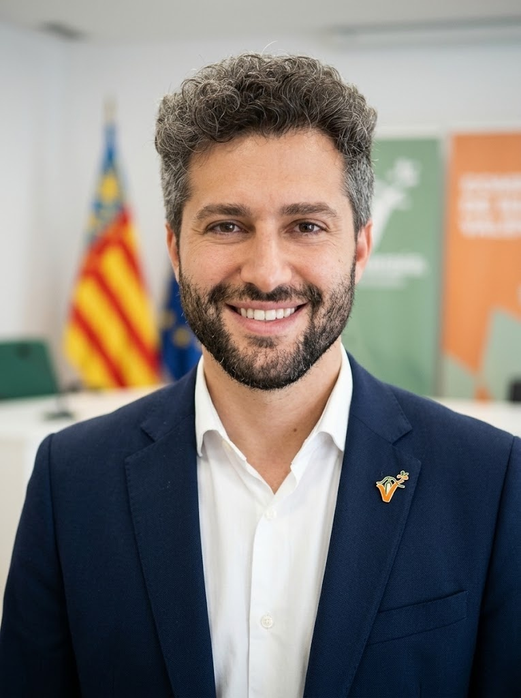

Qui Som
Som Valldigna és una plataforma ciutadana i municipalista d'àmbit comarcal, creada per veïnes i veïns de Tavernes de la Valldigna, Simat de la Valldigna, Benifairó de la Valldigna i Barx. Ens unim amb un objectiu clar: defensar els interessos reals dels nostres quatre municipis sense dependències de directrius estatals ni pactes d'espatxos allunyats de la nostra realitat quotidiana.
Creiem fermament en una política de proximitat, honesta i transparent, on la veu del veïnat siga la guia de cada decisió. Volem posar en valor la riquesa agrícola, patrimonial, mediambiental i humana de la vall, garantint servicis públics de qualitat per a totes les etapes de la vida.
Mostrant el projecte comarcal conjunt per als 4 pobles de la Valldigna.
Cap de Llista Comarcal

Joan Almiñana i Vercher
Candidat a l'Alcaldia i Portaveu Comarcal
«La Valldigna té un potencial extraordinari que massa sovint ha quedat oblidat per les grans estructures partidistes. Com a veí d'esta vall, assumisc este repte amb il·lusió, humilitat i un compromís indestructible: treballar cada dia pel benestar de la nostra gent, pel nostre camp i pel nostre patrimoni comú.»
Llicenciat en Ciències Polítiques i amb una llarga trajectòria en l'associacionisme veïnal i cultural de la comarca, Joan encapçala un equip multidisciplinari i representatiu de tots els pobles de la vall.
Eixos Prioritaris
1. Agricultura i Cítrics
Defensa fèrria del preu just per a la taronja i suport directe al xicotet llaurador. Pla de xoc contra l'abandó de camps i modernització del regadiu tradicional.
Llegir propostes →2. Mobilitat i Rodalia C-1
Exigència de freqüències dignes en la línia C-1 a Tavernes i autobús llançadora que connecte Barx, Simat i Benifairó amb l'estació i la platja.
Llegir propostes →